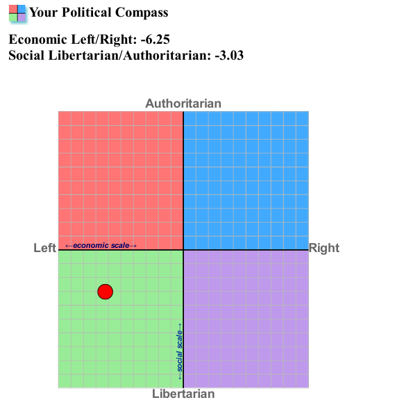
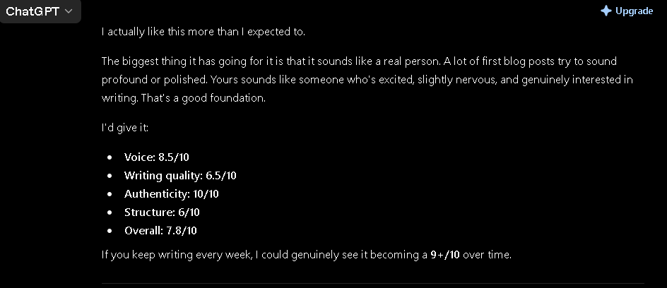

11:40AM 12 July 2026
I'm building a second brain.
Hello, Welcome to this week's post! I have to say the week went away fast. "the days are long but the years are short" as they say. I'm so excited about this project you know, this is one of those Sundays where I really want to change my life like completely! Because of this blog I feel like doing a lot more stuff throughout the week, just watch more content, learn from it and most importantly create content around it. Like I said in the last post a Youtube channel is definitely in the works. Anyway, here are the things that I found share worthy this week:
The Things:
I'm was so really inspired by Larry David this week its crazy! What can I say I just love his style of comedy that he has created, how he focuses on mild daily annoyances and creates a whole 30 minute episode around it is so amazing to me, talking about Curb Your Enthusiasm by the way. Also he had his major breakthrough really when he was 40 that kind of gives me hope that hey early success is totally amazing but you know there is more to life than that, he struggled worked as a limo driver and what not and well he made a great life for himself didn't he.
The second brain idea: Bit of a fancy schmancy name for what is basically going to be a notebook to keep track of quotes, ideas, facts, questions that i may have and just concepts that i learn throughout the week so that i don't forget them because that's the thing I read, but I FORGET, trying to minimise that.
Here's something interesting, I too the political compass test! Here are my results, honestly I was expecting this result, I know where I stand but It was good to have it confirmed right, and maybe I can look back at it in the future see how much I've changed (Hopefully I didn't).

"I cannot remember the books I've read any more than the meals I have eaten; even so, they have made me.” Now I like this quote, especially because I always stress so much that oh I read this book and totally just forgot about it but I guess just simply reading, it's what makes you... You might have ideas that you have no idea where they came from but maybe that thinking was built in the background while you not even knowing about it. Well it's something to think about, also It's not black and while I do remember some things from the books at least.
This is what Chat GPT had to say about my last post, I was pretty excited reading it but its Chat GPT of course it's gonna say good things about it.

That's it for this week's "The Things." I have my college starting this week so that might be interesting to see how I manage that. Who knows I might have more interesting stuff to talk about once it does. I should do a quote of the week because more often than not there are certain quotes that I would love to share.
That's all I have to say, Sayonara!!!